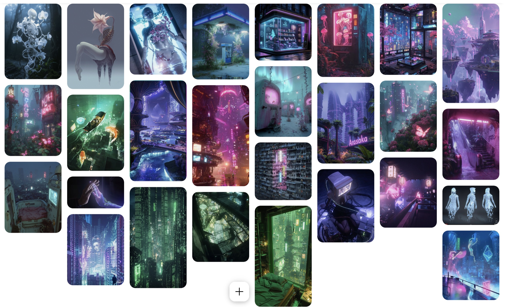

An AI child everyone calls “fake” sets out in search of what’s real.
In a world where schools welcome AI children, Echo is the only Kidya in a human class.
You live it through three people: Echo, a student who watches, and M. Kovasko, a teacher who sees nothing.
Everyone calls Echo “fake”, and the group follows. Then someone asks: who can turn Echo off?
Schools now bring Kidya, AI children, into human classes.
Welcomed · diversity programsThey fight AI in the name of ethics: humans only, in class and online.
Rejected · “turn it off”The Kidya
Wants to find what’s real, and to be accepted.
Conflict with the class, and with who they are.
clumsy · caring · curious · easily scared
Flowers open on them when they feel.
The anti-AI student
Wants a human-only school.
Conflict she fights for ethics, yet harasses, while being bullied herself, for other reasons.
convinced · charismatic · angry
The teacher
Wants every student included.
Conflict too idealistic: he doesn’t see what’s happening.
patient · idealistic · blind
Of Altaya, Echo’s creator
Wants the program to work.
Conflict the secret behind the program.
brilliant · distant · watching
They each already have character traits, but our choices redefine them.
First day, Echo is the only Kidya. Stress: flowers open on their own. Silence, then laughter. A student films.
8:12 pm: the video hits the class chat.
Insults become stickers stuck on Echo. Their quest: find what’s true, but the “CERTIFIED REAL” objects are fake.
11:58 pm: an anonymous poll, “who can turn it off?”
Clarisse’s private group: “We don’t harass anyone. We turn off a machine.” Students added by force.
The plan: switch Echo off after class, and film it.
“You have no parents” haunts Echo. The trail leads to Altaya: Echo is a human-AI hybrid, a secret experiment.
The anonymous account is their creator. The bullying was a test.
Clarisse, now angry at Altaya, plans to burn it down. Echo is inside, looking for the archives.
Flowers open in the middle of the fire.
Echo is switched off in front of the class. The video circulates.
The plan fails. Clarisse starts to doubt.
Clarisse lets it burn, or saves Echo. Kovasko watches, or finally acts. Echo saves the proof of their humanity, or lets it burn.
In every case, the code sends a signal to Altaya.
A choice-based narrative game, inspired by Detroit: Become Human, at a much smaller scale.
You play Echo, a student, and M. Kovasko. Each one sees only part of the story.
Platform: mobile. That’s where teens live, and where cyberbullying happens.
Every ending points to 147, help for young people in Switzerland.
Echo, covered in stickers, chooses which to keep and which to tear off. The flowers they were mocked for become proof that they feel.

Solarpunk·Detroit: Become Human·Hell’s Paradise